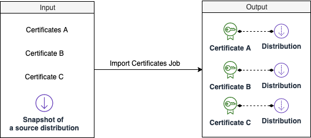
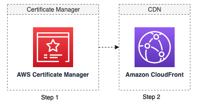

Import existing certificates
The solution will automatically import one or multiple your existing issued certificates in ACM and create associated distributions in CloudFront.

Workflow
When you starts an Import Certificate Job, the solution starts a workflow in AWS Step Functions that does the following:
- Import certificates in ACM: The solution will automatically import certificate records in ACM.
- Create new CloudFront distributions: The solution will automatically create CloudFront distributions. After all distributions were created, the solution will send a SNS message to the designated email address.

Schedule a job for importing existing certificates
Important
Currently, the solution only supports importing one certificate in a job on the Web console. Alternatively, you can use API to import multiple certificates, see API reference guide for details.
- Log in to the web console.
- In the left sidebar, under Configuration, select SSL Certification.
- Choose Import Existing Certificates.
- Choose Import One Certificate.
- Enter Certificate name, Certificate body, Certificate Private Body, and Certificate chain.
- Click Add new tag to add a Tag for the resource (certificate, CloudFront Distributions) that will be created.
- Click Start job.
- Verify the generated input parameters and if everything is fine then enter "Confirm" in input box and click "Apply" button.
View import certificate job status
Once the import job started, you will be redirected to a page where you can view the status of the job. For import certificate job, there are two steps in AWS Step Function workflow. After all steps are completed, the job will finish with success. If one of the steps failed, the job will fail.
- Step1 will be completed once all certificates were created in ACM. It usually takes less than a minute.
- Step2 will be completed once all expected distributions were created in CloudFront.
After Step2, the domain owners are expected to add new CloudFront distribution to map to CNAME. For more information, see Adding CloudFront record for CNAME with your DNS Provider.
If the job failed, refer to Clean up resources to clean up the created ACM and CloudFront distributions if needed.